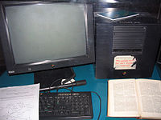
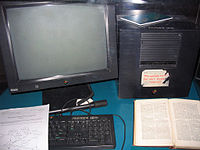

බහුමාධ්ය තාක්ෂණය සහිත වෙබ් අඩවි නිර්මාණය
බහුමාධ්ය තාක්ෂණය සහිත වෙබ් අඩවි නිර්මාණයබහු මාධ්ය යනු විවිධ මාධ්යයන්ගේ එකතුවකි. පුවත්පත්, සඟරා, චිත්රපට, ගුවන්විදුලි, රූපවාහිනිය ආදී සන්නිවේදන මාධ්යයන්ගේ එකතුව තුලින් පරිගණක තාක්ෂණය හරහා අකුරු, වචන, දත්ත, චායාරූප හෝ චිත්ර, ශබ්ද ,චලන රූප වීඩියෝ පට ආදිය යොදාගනිමින් තොරතුරු හුවමාරු කිරීම බහුමාධ්ය තාක්ෂණය ලෙස හැඳින්වේ. මෙවැනි බහුමාධ්ය තාක්ෂණික තොරතුරු අන්තර්ජාලයෙහි වෙබ් තාක්ෂණය භාවිතා කරම්න් විවිධ ක්ෂේත්රයන්හි යොදාගනු ලබයි. ඉන් ප්රධාන වශයෙන් අධ්යාපන ක්ෂේත්රය, ඉනිජිනේරු ක්ෂේත්රය, වෙලඳ ප්රචාර, චිත්රකරණය හා විද්යාත්මක පර්යේෂණ කටයුතු වලදීත් යොදා ගැනේ. අධ්යාපන ක්ෂේත්රය මෙහි දී ප්රමුඛත්වයක් ගන්නා අතර විද්යුත් අධ්යාපන ක්රියාවලියේ දී හෝ පරිගණක විශ්වකෝෂ නිර්මාණයේ දී හෝ මෙම බහුමාධ්ය තාක්ෂණය බෙහෙවින් ඉවහල් වේ. එලෙසම තව දුරටත් විස්තරාත්මකව කරුණු ඉදිරිපත් කිරීමේ දී ඡායාරූප ද්වීමාන හා ත්රිමාන ආකාරයට දක්වමින් චලන චිත්ර යොදාගෙන වීඩියෝ පටයක ආකාරයෙන් ද ඉදිරිපත් කිරීමට හැකිය. මේ තුලින් භාවිතා කරන්නා හා ලබන්නා අතර පවත්නා දුරස්ථභාවය තවදුරටත් අඩු කරගැනීමට හෝ නැති කරගැනීමට ඉවහල් වේ.
මෙසේ සමාජයේ දුරස්ථභාවය අඩු කරමින් හා පවුල් සබඳතා වැඩි කරමින් පරිගණක තාක්ෂණය, සන්නිවේදන හා බහුමාධ්ය තාක්ෂණය සම්මිශ්රණය වීමෙන් බිහි වූ තොරතුරු තාක්ෂණය තුලින් වෙබ් අඩවි නිර්මාණය පිළිබඳව මෙතැන් සිට සොයා බලමු.!
1989 වසරේදී ටිම් බර්නස් ලී මහතා විසින් පළමු වරට ලොවට හඳුන්වා දෙනු ලැබූ විශ්ව විසිරි වියමන (World Wide Web) තුළ විශේෂිත වූ බහුමාධ්ය තොරතුරු හුවමාරු වන සහ බෙදා හරින පද්ධතියක් ලෙස අද අන්තර්ජාලය බිහි වී ඇති අතර ඒ තුළින් සකස් කරනු ලැබූ වෙබ් අඩවි WWW Server නමින් හඳුන්වනු ලබන වෙබ් පිටු තැන්පත් කර ඇත. එම පරිගණක යන්ත්රවල ඇති තොරතුරු ඕනෑම කෙනෙකුට පහසුවෙන් ලබා ගත හැකිය. එක් එක් පුද්ගලයින් තමන් සතුව වෙබ් අඩවි නිර්මාණය කරන අතර එහි මුල් පිටුව Home Page වන අතර එයට සම්බන්ධ කර ඇති අනෙකුත් පිටු වන Links යොදා ගනිමින් ඊට අදාළ තොරතුරු ඇතුළත් කර ඇත.
එලෙසම WWW හි තවත් වැදගත් ලක්ෂණයක් වන්නේ විවිධ බහුමාධ්ය තොරතුරු සඳහා එනම්, ඡායාරූපයකට, වීඩියෝ පට ඛණ්ඩයකට, ශබ්ද ඛණ්ඩයකට හෝ චලන චිත්රයකට සම්බන්ධතා ඇති කළ හැකිය.
අන්තර්ජාලය තුළ පවතින වෙබ් අඩවි තුළ ලිපි ගොනු හැසිරවීම සඳහා නීති මාලාවක් (උපදේශක ඛේතයන්) HTML භාෂාව මගින් ඉදිරිපත් කර ඇත. ඒ අනුව ඔබට HTML භාවිතා කරමින් වෙබ් පිටු සකස් කිරීමට හැකිය.
 
